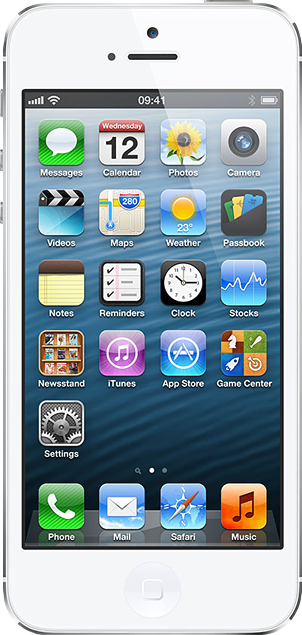

We have a great surprise for Designmodo fans.
Being a new parent is such an exciting time, but also an extremely busy one. If you need advice or organizational tools, Babycare app can save you time, provide solutions and let you focus on what's really important — your baby.
